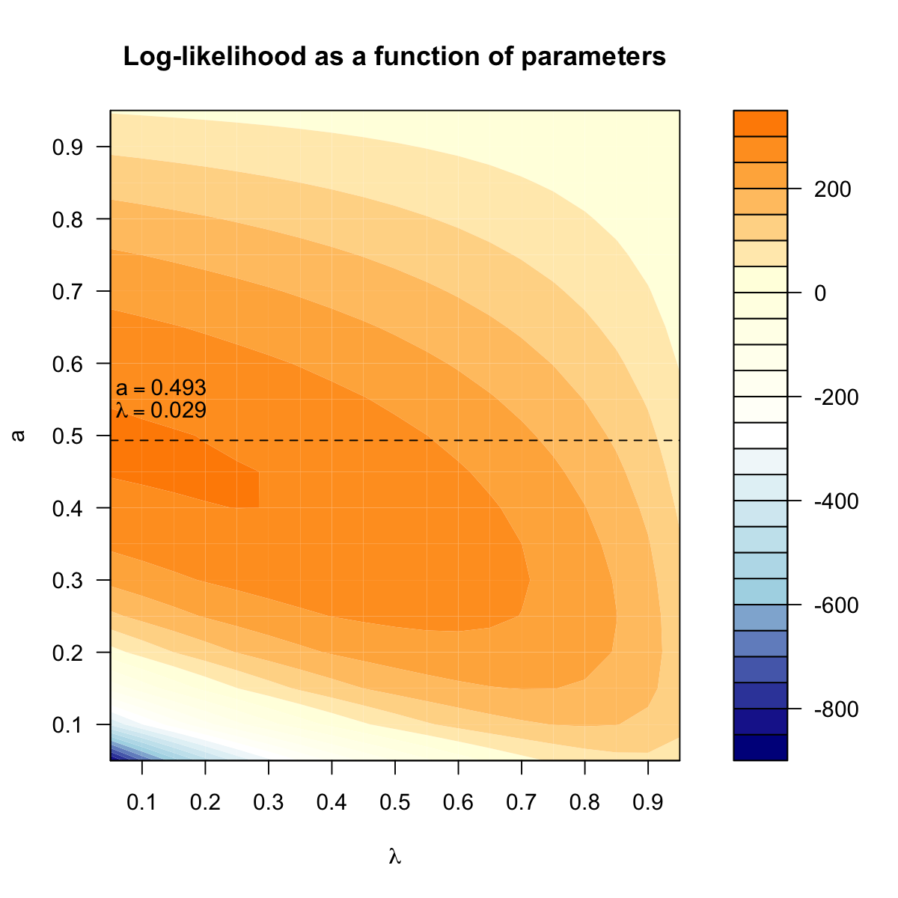

dBUMfit is supposed to take as input a vector of p-values for
deriving their distribution under beta-uniform mixture model (see Note
below). The density distribution of input p-values is expressed as a
mixture of two components: one for the null hypothesis (the noise
component) and the other for the alternative hypothesis (the signal
component). The noise component is the uniform density, while the
signal component is the remainder of the mixture distribution. It
returns an object of class "BUM".
dBUMfit(x, ntry = 1, hist.bum = T, contour.bum = T, verbose = T)
an object of class "BUM", a list with following elements:
lambda: estimated mixture parameter
a: estimated shape parameter
NLL: Negative log-likelihood
pvalues: the input pvalues
call: the call that produced this result
The probability density function of p-values under the Beta-Uniform
Mixture model is formulated as: f(x|\lambda,a) = \lambda +
(1-\lambda)*a*x^{a-1}. The model names after mixing two distributions:
\frac{1}{b-a}|_{a=0}^{b=1}=1
\frac{\Gamma(a+b)}{\Gamma(a)+\Gamma(b)}*x^{a-1}*(1-x)^{b-1}|_{b=1}=a*x^{a-1}
Both are mixed via \lambda. The mixture parameter \lambda
measures the contribution from the uniform distribution. Accordingly,
1-\lambda measures the contribution from the beta distribution.
Notably, the probability density function of the beta distribution can
be splitted into two parts (rather than the exclusitive signal):
a*x^{a-1}|_{x=1}=a
a*(x^{a-1}-1)
In other words, there is no signal at x=1 but all being noise. It
is a conservative, upper bound estimation of the noise. Therefore, the
probability density function in the model can be decomposed into
signal-noise components:
(1-\lambda)*a*(x^{a-1}-1)
\lambda + (1-\lambda)*a
It is misleading to simply view \lambda as the noise component
and (1-\lambda)*a*x^{a-1} as the signal component, just as
wrongly do in the literatures (e.g.
http://www.ncbi.nlm.nih.gov/pubmed/18586718)
# 1) generate an vector consisting of random values from beta distribution x <- rbeta(1000, shape1=0.5, shape2=1) # 2) fit a p-value distribution under beta-uniform mixture model fit <- dBUMfit(x)A total of p-values: 1000 Maximum Log-Likelihood: 346.6 Mixture parameter (lambda): 0.025 Shape parameter (a): 0.475 fit$lambda[1] 0.02458494fit$a[1] 0.4749993
){kind=link}